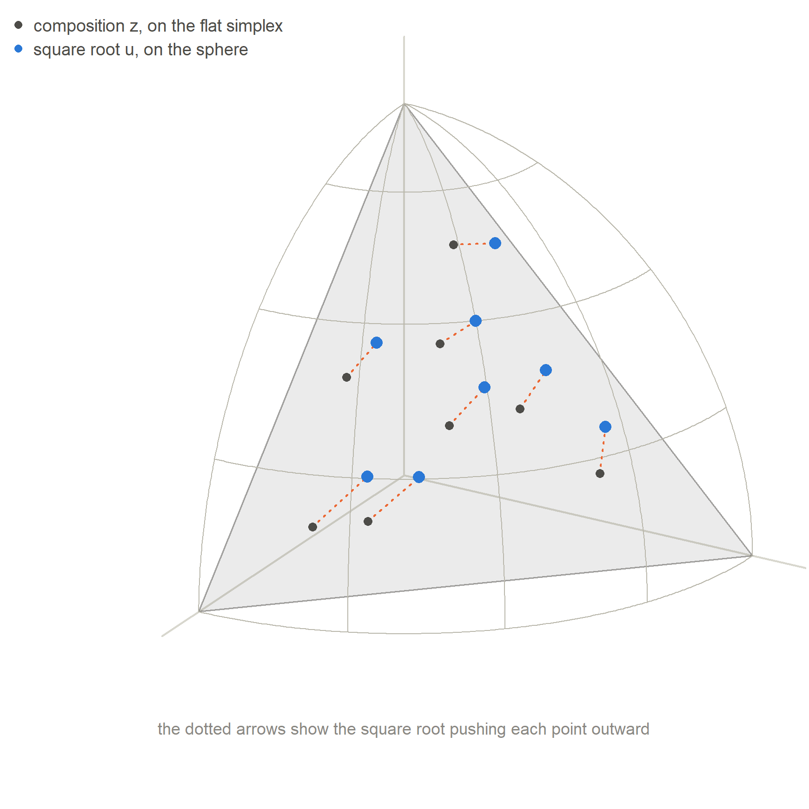
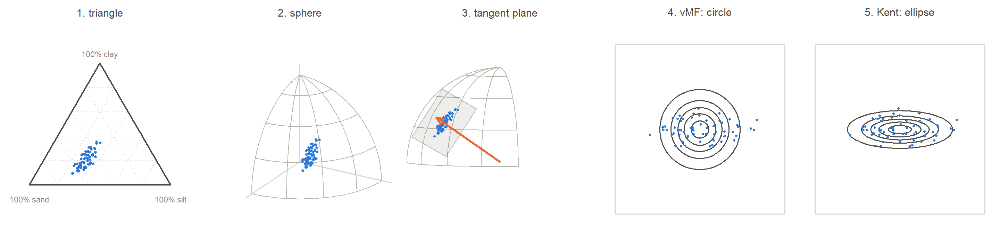

Compositions on the sphere
Explore why square roots place compositions on a sphere, how Kent controls shape and orientation, and how tangent normal models support efficient tree splitting.
Code & Software
Software, interactive explanations and reproducible research. Explore the ideas, try the visualisations, or open the code.
From the simplex to the sphere: understand Dirichlet, Kent and tangent normal models, then explore their use in random forest splitting. Open the interactive presentation →
Interactive research

Explore why square roots place compositions on a sphere, how Kent controls shape and orientation, and how tangent normal models support efficient tree splitting.

Interactive explanations connect the distribution on the sphere with tangent-plane approximations, covariance structure and moment-based parameter estimates.
Research software
An R library for random forests with compositional responses. The Dirichlet node model adapts tree splitting to proportions, with examples and an installation guide linked below.
Code